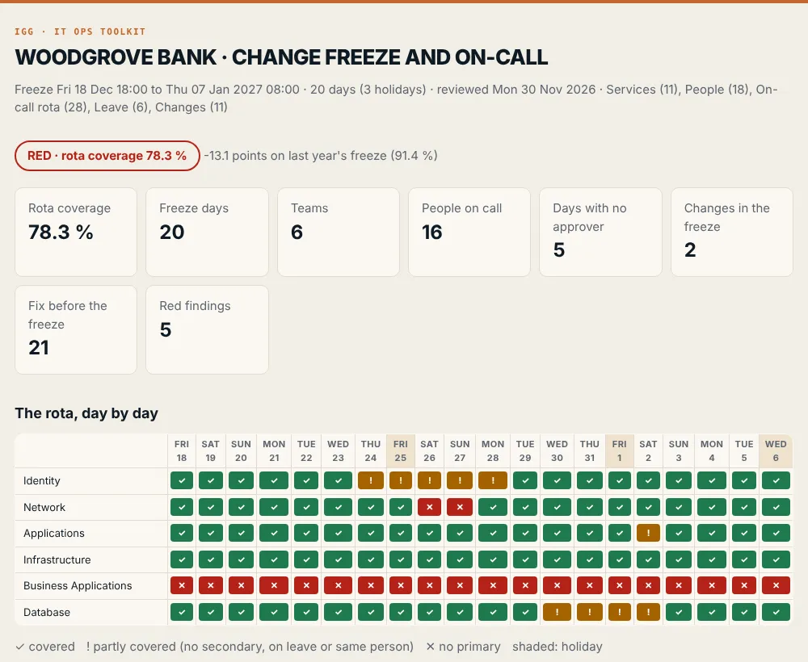

On Saturday 26 and Sunday 27 December, the network team's rota has a secondary and no primary. Nobody noticed, because the rota is a spreadsheet with one tab per team and nobody reads them all together until the night someone needs them. That is one of the first lines of the change freeze review published with this post. It is an open-source project that runs on sample data from a fictional bank with its IT operations in Madrid.
The freeze in the demo runs from Friday 18 December at 18:00 to Thursday 7 January at 08:00: twenty nights, three of them holidays. The review runs three weeks before, on Monday 30 November, and reads five things together: the services with their tier and support team, the people who can be on call, their leave, the rota and the changes planned around the freeze.
Who picks up the phone
Every team that runs a service needs a primary every day, and a different secondary if any of its services is critical or high. The report draws it as a calendar, team by team and day by day. Besides the network gap, Marta Gil is on the Identity rota from the 24th to the 28th, exactly the days she is on holiday. Database has no secondary from 30 December to 2 January. Applications has the same person as primary and secondary on 2 January. One name on the network rota is not in the team list at all, and Business Applications, which runs document management, has no rota.
Whether they can do anything
Jorge Ruiz is primary nine days in a row, Christmas Day and New Year's Day included. Two engineers on call have no phone number on file. Three have not tested remote access from home for months, or ever. The three people who can approve an emergency change are all on leave from 28 December to 1 January, so for five days a fix that needs approval has nobody to approve it.
What should not be happening
A firewall clean-up was approved for 21 December without anybody calling it an exception. A draft intranet change sits on the 28th. A SQL Server update for 9 December is still waiting for CAB, and the core banking quarterly patch is planned 21 hours before the freeze starts. The payments gateway runbook was last reviewed in March 2025, the network has none, and the core banking vendor answers the phone in business hours only. Two changes are approved freeze exceptions, and the review leaves them alone.
The demo scores 78.3% rota coverage, 13.1 points down on last year's freeze, with five red and seventeen amber findings, twenty-one things to fix before the freeze and six decisions: close the holes in the rota, take four changes to the last CAB, name a deputy emergency approver, rebalance one person's shifts, check phones and remote access, and agree vendor cover.
How to use it with real data
A read-only PowerShell script takes the changes for the weeks around the freeze from ServiceNow. The services, the people, the leave and the rota go in CSV files, the rota as one row per day or per block of days. Freeze dates, holidays and limits are the organisation's own policy in a settings file. It runs on Python with no external dependencies and produces a web report, a one-page pack for the last CAB before the freeze and CSV files with every team, day, person, change, finding and action. The demo data is fictional: names, services, vendors and changes.
Where it comes from
The tool comes from running change and release management: process owner for incidents, changes and problems, CAB and go-live reviews, release planning with rollback, runbooks and training, major incident response and DR/BCP tests.
Want to bring it to your environment or adapt it to your case? Get in touch and we can look at it together.
Tech Career Lab · newsletter
Found this useful? Every two weeks I send one practical idea for IT professionals: LinkedIn, projects, networking and hiring processes.
Sign up and get the 33 ideas →